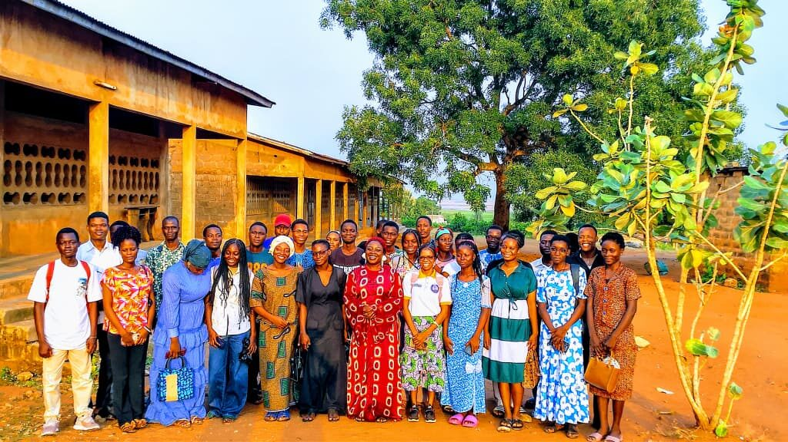
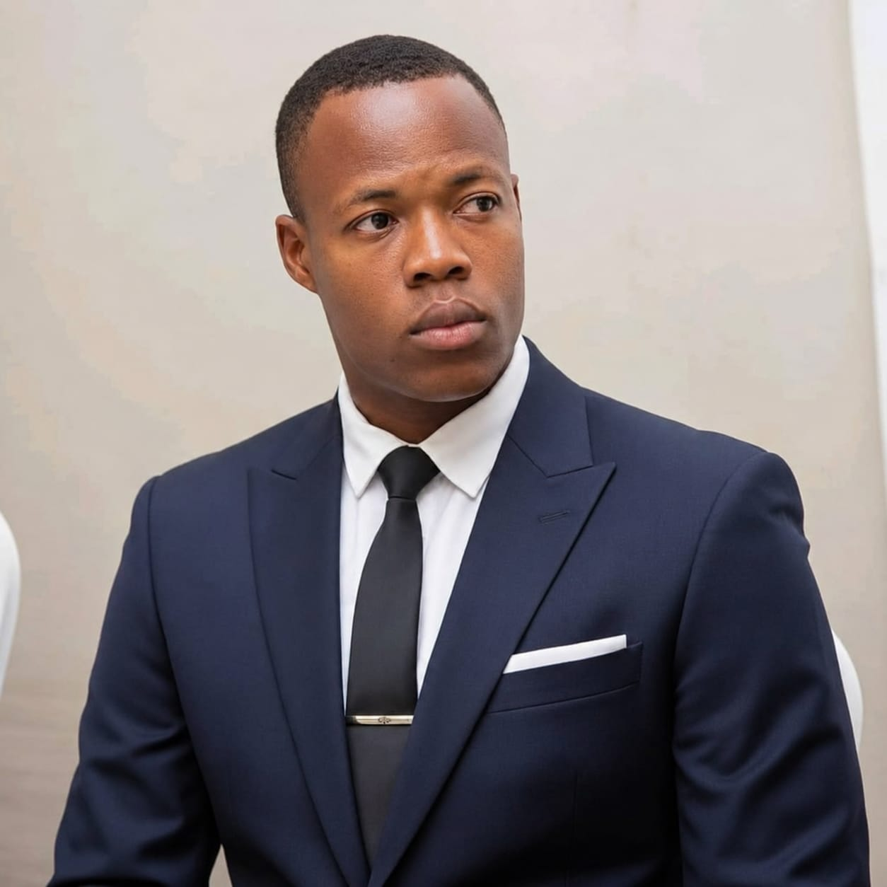
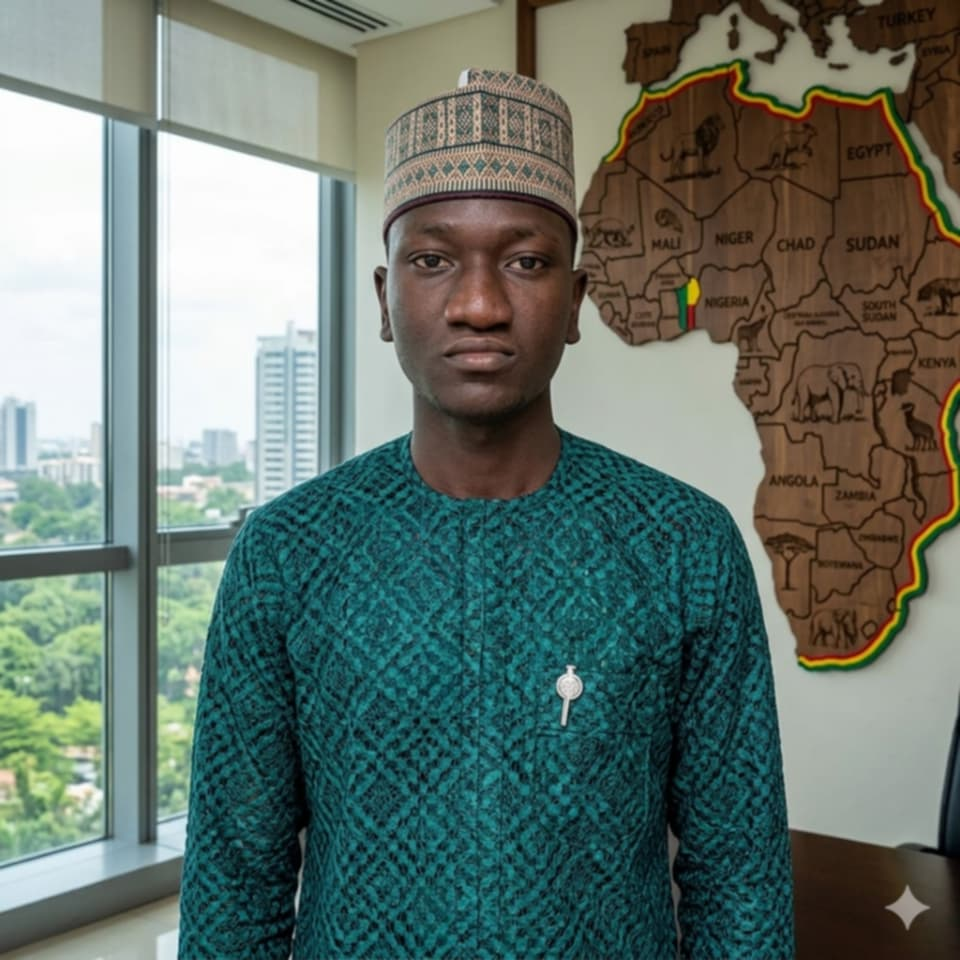
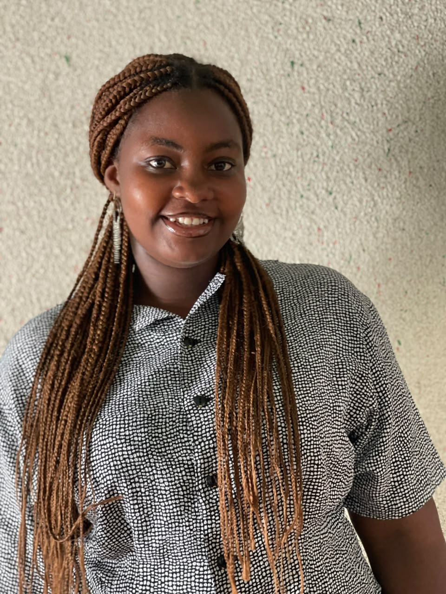
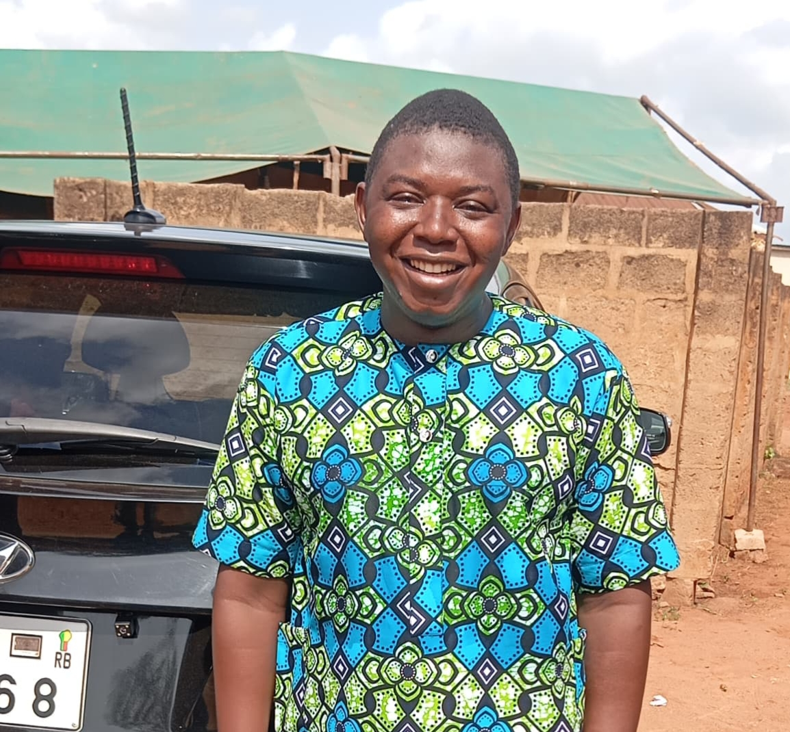
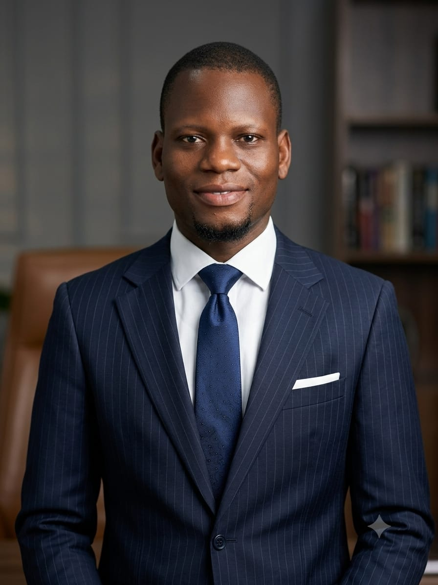
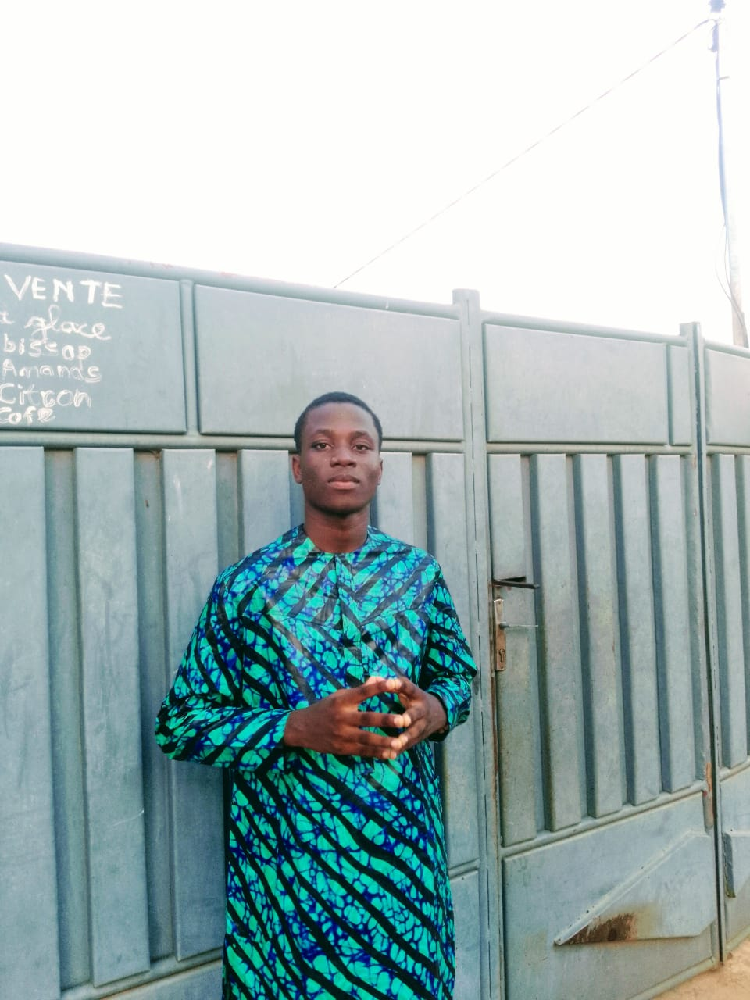
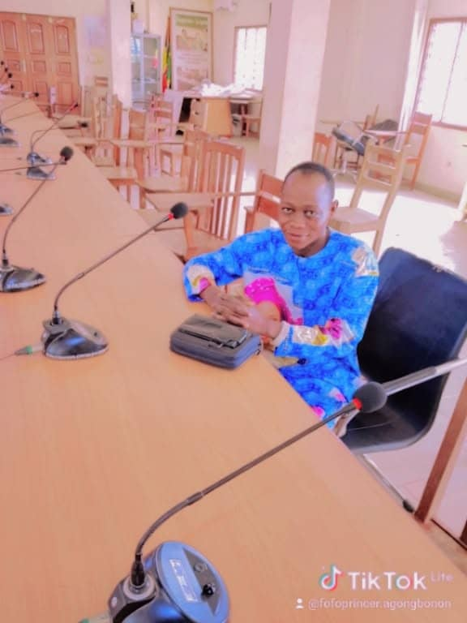
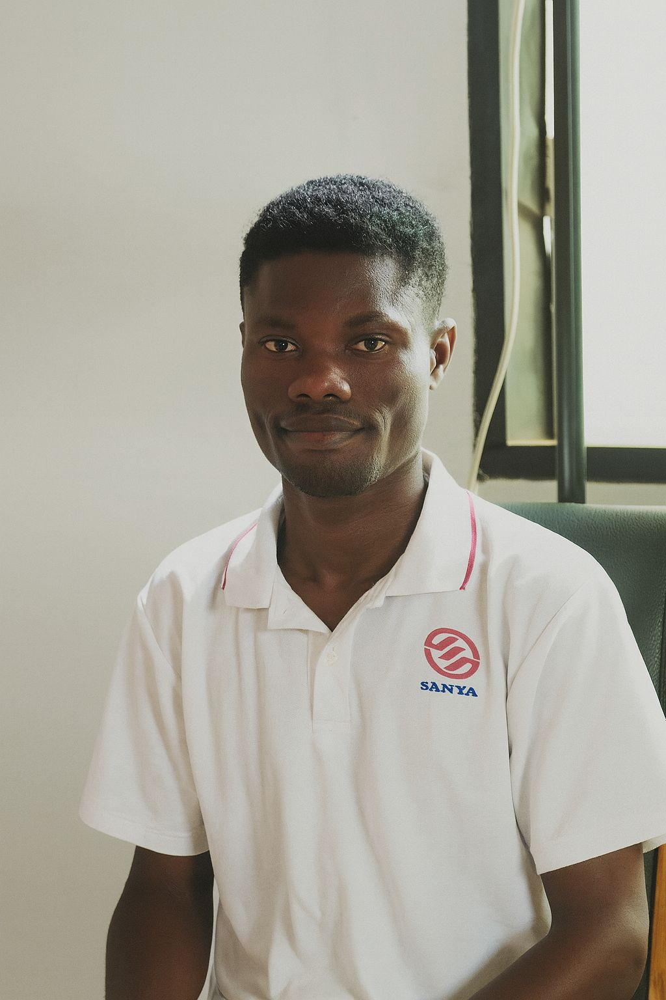

Qui sommes-nous ?
L'Union Nationale des Jeunes Engagés pour le Développement du Bénin (UNJED-BENIN) est une organisation apolitique et laïque au service de la jeunesse.
Une organisation née de l'engagement de la jeunesse
L'UNJED-BENIN a été fondée par des jeunes béninois conscients du rôle majeur de la jeunesse dans le développement de la nation. Face aux défis de la formation, de l'emploi et de l'engagement citoyen, les fondateurs ont choisi d'unir leurs énergies au sein d'un cadre structuré, apolitique et laïque.
Depuis, l'organisation s'est développée à travers le pays, fédérant des milliers de jeunes autour d'actions concrètes d'éducation, de solidarité et de leadership.

Notre vision
Un Bénin où chaque jeune, formé et responsable, devient un acteur du développement durable, solidaire et inclusif.
Notre mission
Former, mobiliser et valoriser la jeunesse béninoise à travers l'éducation, le leadership, la solidarité et la promotion de la culture et de l'environnement.
Les principes qui nous guident
Inclusion
Chaque jeune a sa place, sans distinction.
Solidarité
L'entraide et le partage au cœur de nos actions.
Excellence
La recherche constante de la qualité et du mérite.
Intégrité
La transparence et l'honnêteté dans tous nos engagements.
Citoyenneté
La participation active et responsable à la vie nationale.
Engagement
La détermination à agir pour le changement collectif.
Organigramme Institutionnel
Structure hiérarchique et fonctionnelle de l'UNJED-BÉNIN.
Générale
Exécutif National
aux Comptes
Permanent
Techniques
Départementales
Communales
& Universitaires
Quartiers · Villages
Étudiants
Thématiques
Bureau Exécutif National

HOUESSOU Lisson
Juriste en Droit Public, fondateur et Président du Bureau Exécutif. Expert en gouvernance étudiante et mobilisation jeunesse.
GOUNOU Carlos
Biologiste et architecte du secteur non lucratif. Apporte une approche scientifique rigoureuse aux projets à impact social.

SABI KECTA Bio Parfait
Administrateur civil, diplômé de l'École Nationale d'Administration du Bénin. Expert en gestion publique et gouvernance locale.
MAHOUNA Christ Mohelly Sènami
Juriste béninois titulaire d'une Licence en droit, en cours de Master Recherche en Droit et Institutions Judiciaires.
DEGBEGNI Christine
Secrétaire Général Adjoint du Bureau Exécutif. Engagée pour la bonne coordination administrative de l'Union.

HOUNNOUGA Padia
Trésorier Général du Bureau Exécutif. Garant de la rigueur financière et de la transparence dans la gestion des ressources.
HOLONOU Rita
Étudiante en SIL (Systèmes Informatiques et Logiciels) à WAUU. Passionnée par le développement web et les technologies numériques.

AYINON Michaël
1er Responsable à l'Organisation du Bureau Exécutif. Coordonne les activités et la logistique des actions de l'Union.

AHOSSI Sylvain
2ème Responsable à l'Organisation. Contribue à la coordination des activités et à la mobilisation des membres de l'Union.
ALLAGBE Arnaud
Jeune leader passionné par le leadership, le droit et l'environnement. Double cursus en Sciences Juridiques et SVT.
ASSOGBA Romulus
Agent de police, apporte une connaissance précieuse des dynamiques communautaires et des enjeux de sécurité.
AGBIDINOUKOUN Laurina
Étudiante en double inscription (Droit et Informatique). Vision transversale au service des partenariats et de l'inclusion féminine.

HOUNMENOU Aurel
Chargé de Mission du Bureau Exécutif. Contribue à la réalisation des missions stratégiques de l'Union.
Commissariat aux Comptes
COTCHI Olivier
Expert à l'intersection de la finance, de l'analyse et de la stratégie. Garant de la transparence financière de l'Union.
TOSSA Espoir
Étudiant en Droit à l'UAC et en formation en audiovisuel. Développe des compétences en communication et leadership.
GANDONOU Freshnel
2ème Adjoint au Commissaire aux Comptes. Contribue au contrôle et à la vérification des comptes de l'Union.
Bureau de la Cellule Centrale de Communication et de Création de Contenus (CCC)
Numérique, Communication & Médias
GBEGNIDE Kèmi Doris Prospéra
Combine des compétences en finance et une aptitude avérée pour la rédaction de projets. Pilier de la stratégie de communication.
DOUNON Sèdonou Théophile
Développeur web et étudiant en Statistiques Appliquées à l'ENSPD (Université de Parakou). Passionné par l'IA appliquée à l'agriculture et à la finance en Afrique.
AGBOTAN Victorin
Entrepreneur en apiculture, producteur de cosmétiques naturels et créateur de contenus. Écrivain, poète et porteur de projets communautaires.
OLAOGOU Corneille
Jeune béninois passionné par l'éducation, l'agriculture et la musique. Acteur actif pour le développement de la jeunesse.
AGBODJA Abdou Bassitou Adéoyé
Solide expertise en gestion financière et coordination de projets. Capacité avérée à superviser des initiatives complexes.
BABAODI Aimé
Jeune talent en formation dans le domaine de l'énergie renouvelable. Compétences en Community Management au service de l'ONG.

AGONGBONON René Prince
Leader reconnu, engagé auprès d'organisations comme U-Reporters, RAMP-Bénin, CJEBE et YEWA. Originaire du Zou.
HOUNGBO David
Étudiant en science politique. Développe une compréhension des systèmes de gouvernance et des dynamiques sociales.

MITO Bruno
Technicien audiovisuel professionnel. Expert en cadrage, montage vidéo et réalisation de contenus visuels.
Fonctions et missions
Chaque organe de l'UNJED-BÉNIN joue un rôle précis dans le fonctionnement de l'Union, des décisions stratégiques jusqu'aux actions de terrain.
Ce qui guide nos responsables
Discipline
Rigueur et exemplarité dans l'exercice de chaque responsabilité.
Transparence
Une gestion claire et honnête, redevable devant les membres.
Engagement citoyen
Une action guidée par l'intérêt général et le développement du Bénin.
Rejoignez notre mission
Faites partie d'une génération qui construit le Bénin de demain.